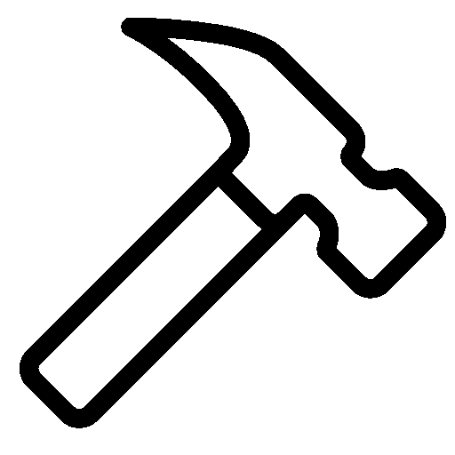

Ryan Snodgrass
PhD Candidate
|
 |
NSF Graduate Research Fellow |
|
rjs492@cornell.edu |
|

Site pages
 back to home page
back to home page
TINY: A diagnostic tool powered by sunlight, a flame, or electricity
This work has been published in Nature BME. You can also visit two news articles (Link 1, Link 2) that were published about TINY.
You can also visit two news articles (Link 1, Link 2) that were published about TINY.
{kind=link}
For many years I have been designing and building a portable, nucleic acid diagnostic tool. It is the first diagnostic device that can be powered by sunlight, flame, and/or electricity. This makes it particular useful in locations with unreliable access to electricity.
My colleagues and I traveled to Uganda (East Africa) in 2016 and 2017 to implement the device at multiple healthcare institutions. We took 5 TINY systems with us.
{kind=link}
This project has been an amazing opportunity to build an intricate system from the ground-up. The interior of the system is designed to stay isothermal at 68°C for an extended period of time: temperature stability is imperative for the nucleic acid assay. Through careful thermal engineering and use of a phase change material, the device can continue to perform the assay isothermally for over an hour in the case of complete electricity outages. If electricity is completely unavailable, sunlight or a flame may be used to heat the device to 68°C.
We experienced many electricity outages mid-assay during our field deployment in Uganda. The system performed flawlessly through the power outages and continued to make its nucleic acid measurement without electrical heating.
{kind=link}
I designed the mechanical parts, the electronics, and the optics for TINY. TINY uses sensitive photodiodes to detect very small changes in light, which enables us to determine if a target nucleic acid is present in a sample.
I should note that this effort has been part of international collaboration. While I have led all the engineering work, my colleagues at Weill Cornell Medicine, UC San Francisco, and the Infectious Diseases Institute in Uganda have worked incredibly hard on the diagnotic and clinical side of this project. It has been a joy to work with such a devoted and talented team of scientists.
It’s difficult to summarize such a large project in a couple of paragraphs. Please refer to our TINY publication for more details.
{kind=link}
{kind=link}